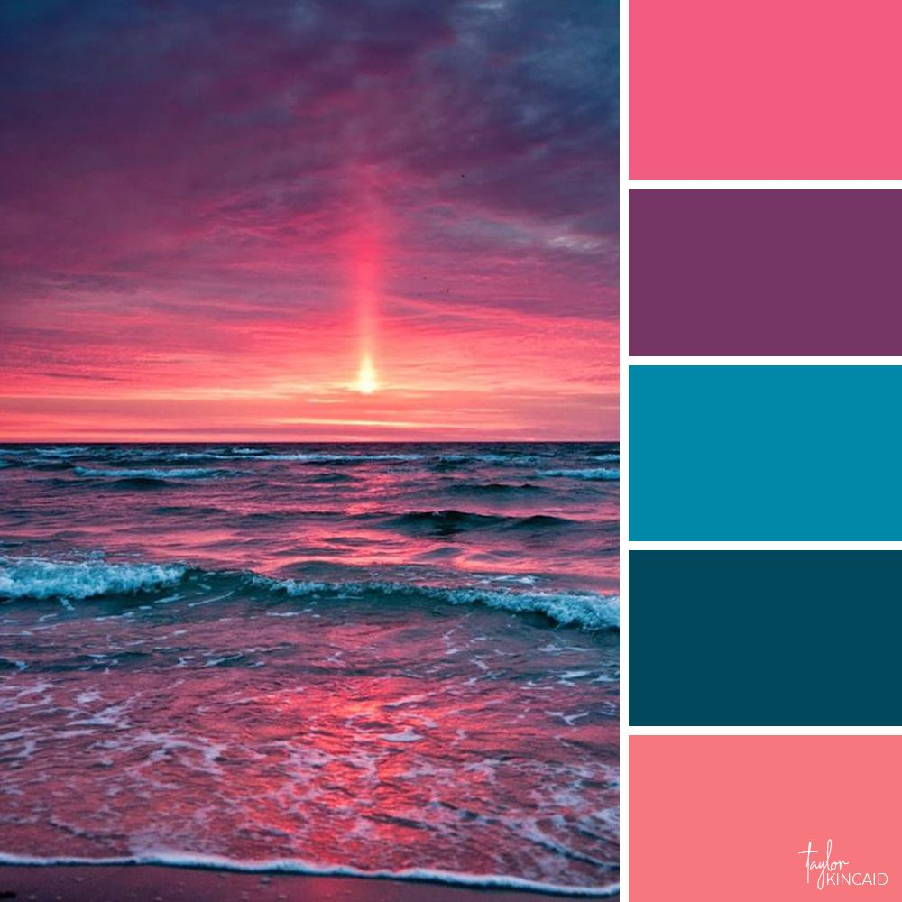

<main class="main-background marginless-panel">
    <form>
        <fieldset class="search-fieldset">
            <legend>Search for origins of your inspiration:</legend>
            <input type="text" placeholder="..." value="purple sky"/>
            <button type="submit"></button>
        </fieldset>
    </form>
            <hr class="hr-shelf">
            <section class="aux-background">
                <ul class="tag-list">
                    <li>dawn</li>
                    <li>dusk</li>
                    <li>sky</li>
                    <li>purple</li>
                    <li>magenta</li>
                    <li>landscape</li>
                </ul>
            </section>
            <section class="aux-background">
                <aside>
                    <strong>Purple</strong> combines the calm stability of blue and the fierce energy of red.
                    The color purple is often associated with royalty, nobility, luxury, power,
                    and ambition. Purple also represents meanings of wealth,
                    extravagance, creativity, wisdom, dignity, grandeur, devotion, peace, pride, mystery, independence, and magic.
                </aside>
                <article class="inspiration-set inspiration-grid">
                    <figure class="inspiration-main-figure">
                        
                    </figure>
                    <figure class="inspiration-aux-figure aux-figure-grid">
                        
                        
                        
                    </figure>
                </article>
            </section>
            <article class="aux-background">
                <iframe width="560" height="315" src="https://www.youtube.com/embed/WpUUnRtHbHc"></iframe>
            </article>
</main>